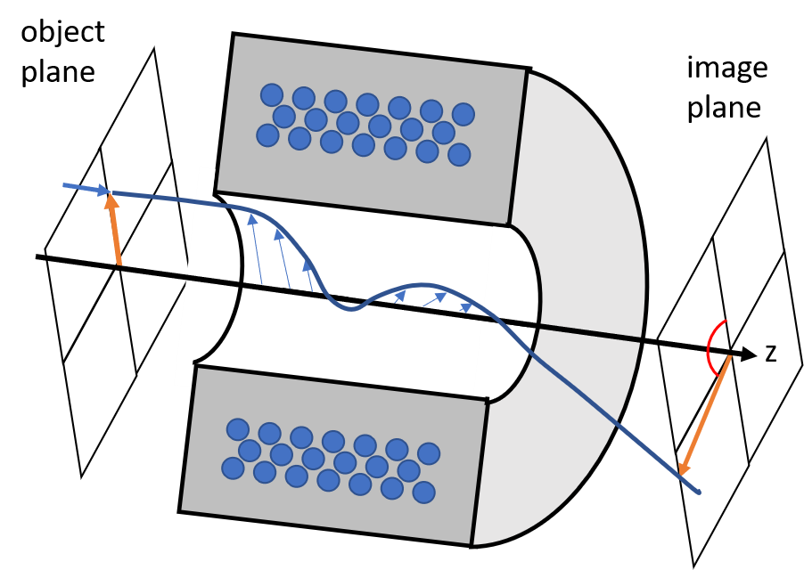

Chapter 5:Instrument
Apertures, Deflectors, and Magnetic Lenses¶

part of
MSE672: Introduction to Transmission Electron Microscopy
by Gerd Duscher, Spring 2021
Microscopy Facilities Joint Institute of Advanced Materials Materials Science & Engineering The University of Tennessee, Knoxville
Background and methods to analysis and quantification of data acquired with transmission electron microscopes.
Magnetic Lenses¶
Electro–magnetic lenses are different from optical lenses: You can change the focal length.
For a deeper understanding and a better operation of the TEM, we have to discuss the details.
Electro–static lenses are not common anymore, because the long term stability is hard to achieve. Magnetic lenses are much easier to keep stable.

The cut through a magnetic lens. Please note that all lenses must be radial symmetric.\
The coil produces a strong magnetic field (up to 1 Tesla or higher), which is concentrated at the pole piece. This pole piece consists of soft iron to achieve a maximal inhomogeneous magnetic field (2.1 Tesla). At room temperature you cannot achieve a higher field than the maximum magnetic field of iron.
Because pure iron is a very soft material, this pole piece has to be handled with extreme care. Any scratch, inhomogeneity or dirt (results from magnetic samples which FLY to the pole piece) destroy the radial symmetry and induce optical errors.
The gap is needed to place apertures and the sample close to the focal planes. This gap doesn’t cause a problem at weak lenses, but at strong lenses (objective lens) this gap induces optical errors. The focal length of a strong lens is also short, and the sample has o be paced inside the objective lens. High resolution lenses always exhibit a small gap to minimize optical errors which results in limited sample tilt.
TEM manufactures invest a lot of money and time to develop new designs of the pole pieces and lens designs.
The coils are made of wires with a low but still some resistance. this resistance heats the lenses and water pipes are integrated for cooling.
TEM manufactures invest a lot of money and time to develop new designs of the pole pieces and lens designs.
[ ]:
Electrons in a Magnetic Field¶
The main equation which describes the motion of an electron in an electro-magnetic field is:
The force \(\vec{F}\) on an electron with charge \(q=e\) depends on the electric field \(\vec{E}\) and the vector cross product (\(\times\)) of velocity \(\vec{v}\) and magnetic field \(\vec{B}\) (measured in Tesla).
For magnetic fields we can ignore the effect of the electric field. The effect of the magnetic field is described by the left hand rule as pictured below.

The forefinger points in the direction of the magnetic field \(\vec{B}\), the second finger in the direction the electron flies initially and the thumb will give you the direction of the thrust.
This left hand rule shows immediately that for a \(\theta\) of 0\(\rm ^o\) and 180\(\rm ^o\), we do not know what to do and really there is no thrust. The thrust is maximum for a \(\theta\) of 90\(\rm ^o\).
For small deviation angles we can make the approximation for the magnitude of the force:
The smaller the distance from the optic axis \(r\) the higher is the force. The higher the velocity of the electrons the stronger the lens has to be.
For 100 keV electrons and a lens diameter of 1 mm, the magnetic field \(B\) has to be in the order of 1 Tesla.
Any direction of the beam can be split in a motion parallel \(\vec{v}_{\|}\) and perpendicular \(\vec{v}_{\bot}\) to the magnetic field direction.
The parallel motion is undisturbed while the perpendicular motion will result in a circle. The radius of this circle is
.
Both motions together result in a spiral motion with the frequency
.
Mathematical, we can write for the near axis motion the paraxial ray equations.
with
This results in a smaller \(\Delta r\) for higher energetic electrons (higher acceleration Voltage \(V\)), and therefore in the need to increase the magnetic field.
Because real lenses are not indefinite thin, but have a certain length, there will always be spiral motion and therefore an image rotation associated with a magnetic lens. The TEM manufactures have a variety of lens settings for different magnifications, which can minimize or cancel image rotation.

Apertures¶
As you know you can put apertures in and out, also you can move them, so that they are aligned with respect to the optic axis. These apertures are little plates with small hopefully round holes in it; they are called diaphragm. The holes are about 10 \(\mu\)m to 100 \(\mu\)m in diameter.
The diaphragm are made of molybdenum, copper or gold. The gold apertures have a self cleaning effect, if you hit them with an intense electron beam and are therefore preferable in a TEM. You cannot use them in a dedicated STEM, where the beam current is much lower.
Electron Beam Deflection¶
Aligning the microscope means to bring all the optical elements (electron source, apertures, lenses, …) onto the same optical axis. To do this a rough alignment is done mechanically. The lenses are pushed and tilted close to a common optic axis. The day to day alignment of the TEM is done electronically with deflectors. These alignment deflectors (with long time stability) are normally magnetic.
In a scanning TEM (or SEM), where the beam has to be moved around, electro–static deflectors are used. Also other deflectors, which have to be fast (beam blanker), use electro–static forces. While a magnetic deflector need a few microseconds, a electro–static one can do in a split of a microsecond.
For the magnetic deflectors, the deflection angle \(\epsilon\) is give by: \begin{equation}\Large \epsilon = \frac{eLB}{mv} \end{equation}
For a 5\(^{\rm o}\) deflection of 100keV electrons we need 0.01 Tesla. That means 100 turn coil with 0.2 A.
We will go a little bit more in detail with the electro–static deflection.\
We have the following equations:

Deflection of an electron in an electro–static field \(\vec{E}\)
For the momentum in x direction we get: \begin{equation}\Large p_x = \int_0^T F dt= e \int_0^T E dt = \frac{e}{v} \int_0^L E dz = \frac{eEL}{v} \end{equation}
For 100 keV electrons in a deflector (capacitor) need an electric field of 20000 V/cm to be deflected by 0.1 rad (5:math:rm o) For that you have to apply a Voltage of 4000V to a deflector with a length \(L\) of 1cm and a width \(d\) of 2mm.
[ ]: